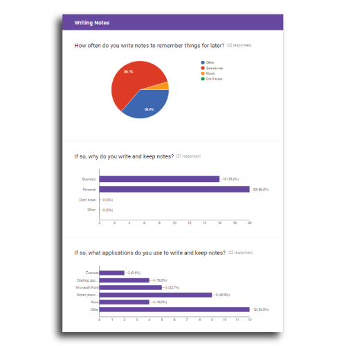
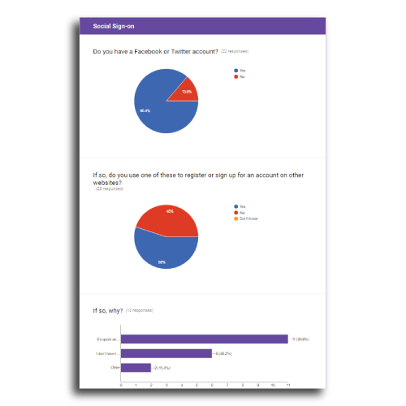
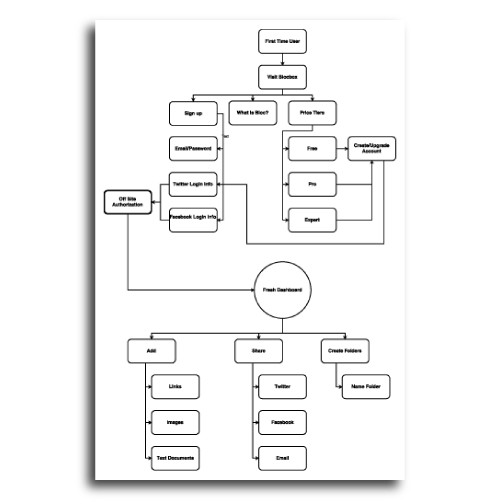
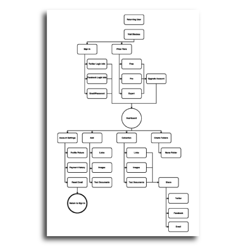
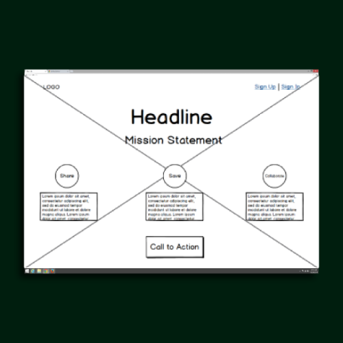
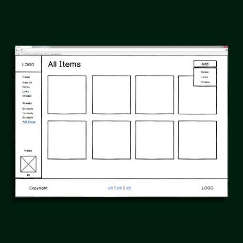
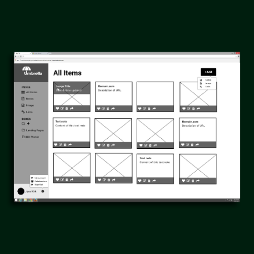
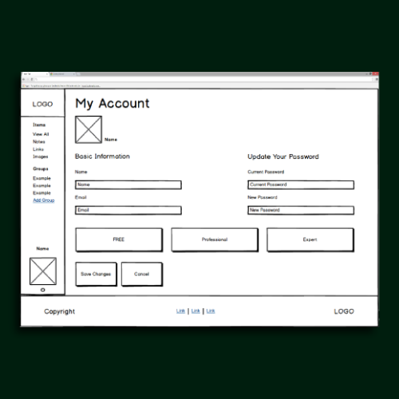

Umbrella was developed to conquer a few specific obstacles. We want to free the user from their physical storage such as flash drives and other external devices witch are at risk of malfunction and general wear and tare. By storing on Umbrella's cloud the user is able to access their information anywhere, on any device with internet access. Their files are also safe from any physical harm while on the cloud. Bookmarked links, images, and text files can be saved, protected and shared all within Umbrella.
   Before I design anything I have to know Umbrella's target audience. Using a few researching methods I can narrow down the user so the site's design will cater to its core user. Identifying the main competition is a great place to start. I looked at sites such as Pinterest and Google Plus. I found elements from the competitive sites that were successful and tried to incorporate them into Umbrellas design. Likewise, I tried to pinpoint weaknesses so I can solve problems preemptively with Umbrella. Surveying the public with a form designed to see who is using similar sites helped pinpoint Umbrella's audience. After I feel like the user has been narrowed down, I move to the wire framing stage. By this point I know what's important to the user so I can minimize the sites content, leaving only the necessary actions available. After fixing any useability issues revealed in the user tests, I start creating the brand identity. Having the color palette, typeset, and logo established, I add detail to the wire frames. The rest of the process is simply polishing the design until I'm satisfied. Having the design set in stone makes the coding process much easier.
   With a combination of effective research and design implementation; Umbrella fits its target audience like a glove. It gave them an easy way to access their files on multiple devices regardless of location. UX based design generated an intuitive navigation and dashboard that is very user friendly.